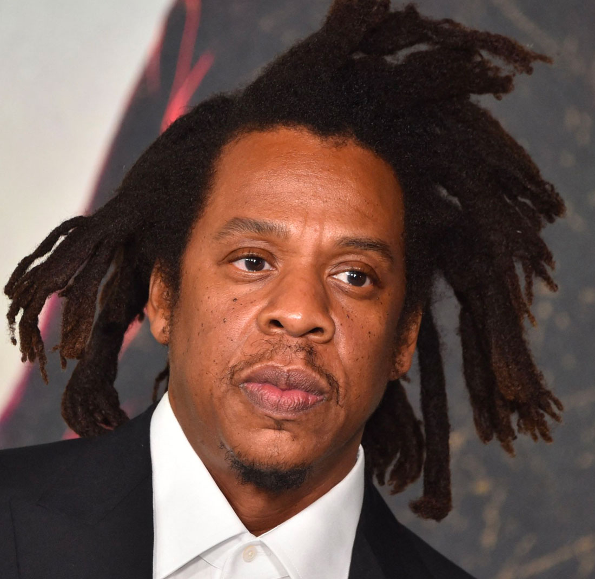
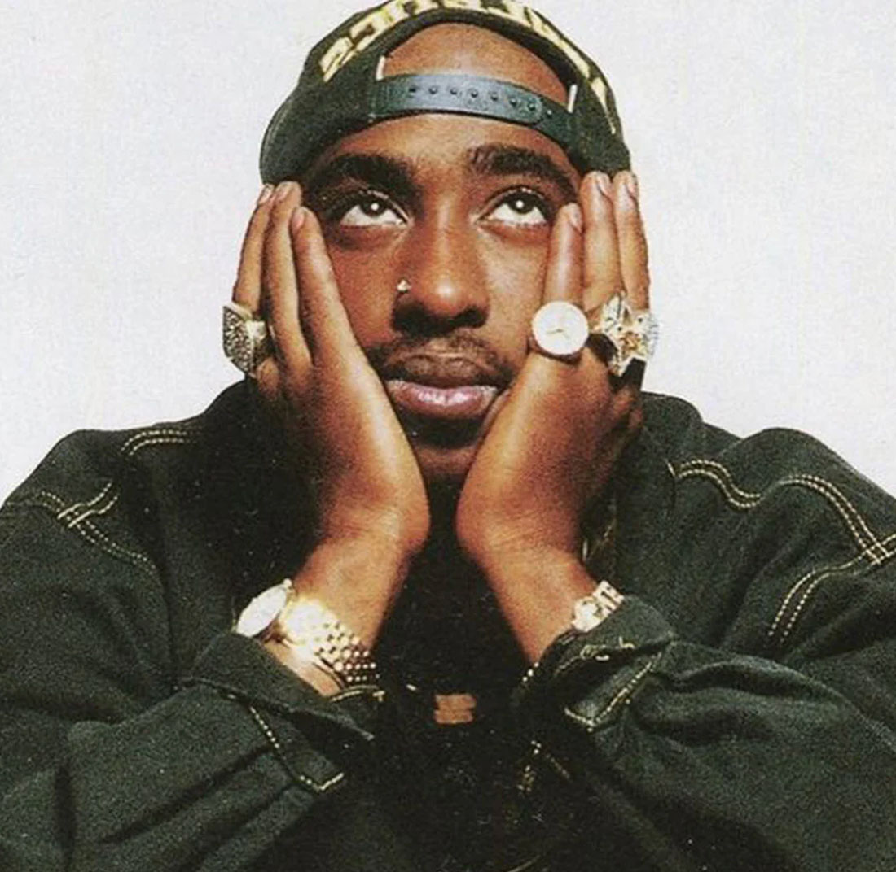
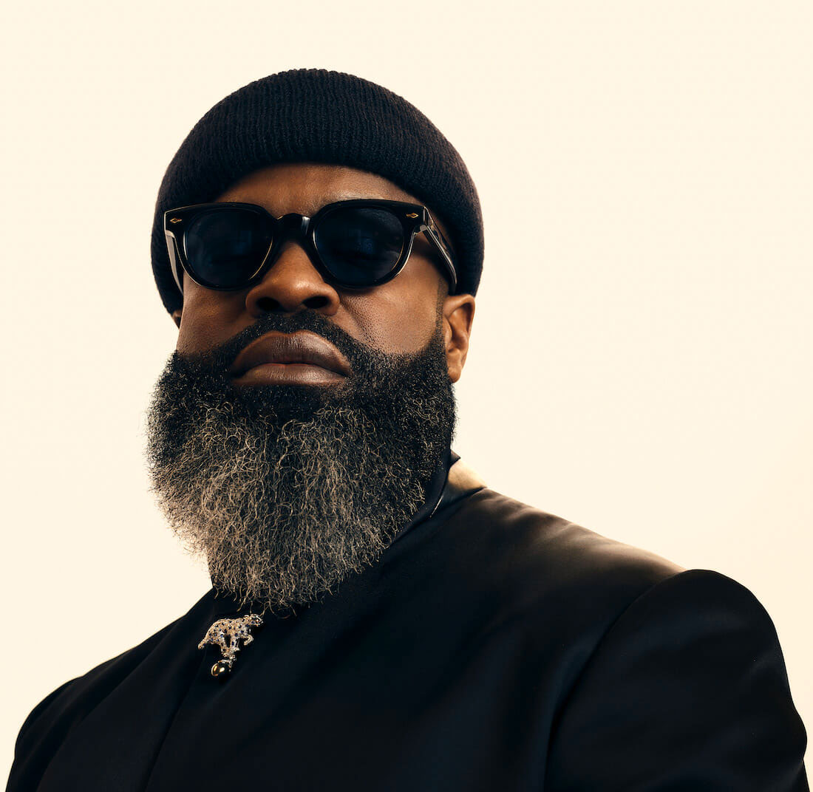
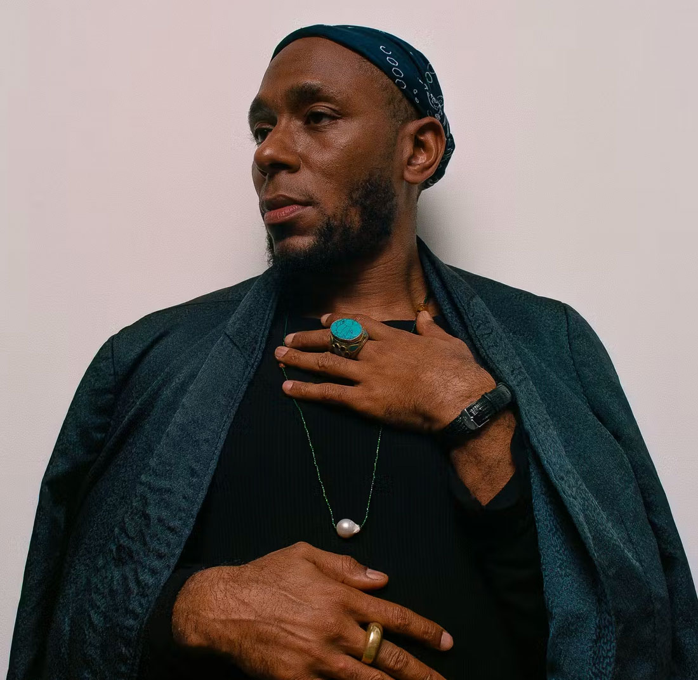

My Top 5 MC's
Jay-Z

(born Shawn Corey Carter, 1969) is a legendary American rapper, businessman, and record executive, often
hailed as the greatest rapper of all time by Billboard and Vibe in 2023. Known for his lyrical complexity and
rags-to-riches storytelling, he began his career in the late 1980s and co-founded Roc-A-Fella Records to
release acclaimed debut albums Reasonable Doubt (1996) and In My Lifetime, Vol. 1 (1997).
He went on to release multiple chart-topping albums including Vol. 2... Hard Knock Life (1998), The Blueprint
(2001), The Black Album (2003), American Gangster (2007), Magna Carta Holy Grail (2013), and 4:44 (2017),
tying with Drake and Taylor Swift for the most Billboard 200 No. 1 albums (14) by a solo artist. His
collaborative projects include Watch the Throne with Kanye West and Everything Is Love with
Beyoncé.
Beyond music, Jay-Z became hip-hop’s first billionaire in 2019 through ventures like Rocawear, the 40/40 Club,
Roc Nation, and Tidal. With 140 million records sold, 25 Grammys, and induction into both the Songwriters and
Rock and Roll Halls of Fame, he stands as one of the most influential and decorated artists in music history.
As of May 2025, his net worth is $2.5 billion, making him the world’s wealthiest musical artist.
Tupac Shakur

(born Lesane Parish Crooks, 1971–1996), also known as 2Pac and Makaveli, was an iconic American rapper, actor,
and activist, widely considered one of the most influential and impactful artists in music history. Known for
addressing racial injustice, poverty, and social struggle, he rose to fame with 2Pacalypse Now (1991) and
continued with Strictly 4 My N.I.G.G.A.Z... (1993) and the introspective Me Against the World (1995), earning
both critical and commercial acclaim.
His 1996 double album All Eyez on Me marked a shift to gangsta rap and became a defining West Coast release,
featuring hits like “California Love” and “Ambitionz az a Ridah.” That same year, he released The Don
Killuminati: The 7 Day Theory as Makaveli shortly after his death. Posthumous releases such as R U Still Down?
(1997), Until the End of Time (2001), and Loyal to the Game (2004) cemented his legacy, all achieving
multi-platinum status. His collaborative work includes Thug Life: Volume I (1994) and Still I Rise (1999) with
Outlawz.
Tupac also starred in films like Juice, Poetic Justice, and Gridlock’d, and is remembered for songs like
“Changes,” “Dear Mama,” and “Hit ’Em Up.” After surviving a shooting in 1994 and serving time in prison, he
joined Death Row Records and became entangled in the East Coast–West Coast rivalry. He was fatally shot in a
1996 drive-by, and his murder remains unsolved.
With over 75 million records sold and a Diamond-certified Greatest Hits (1998) compilation, Tupac has been
inducted into the Rock and Roll Hall of Fame and honored with a Hollywood Walk of Fame star. His life, art,
and activism continue to inspire global audiences and academic study.
Black Thought

(born Tariq Luqmaan Trotter, 1973) is an American rapper, singer, and actor, best known as the lead MC of The
Roots, a hip hop group he co-founded with Questlove. Recognized for his lyrical complexity, live performance
skills, and politically charged lyrics, Black Thought is widely regarded as one of the greatest rappers of his
time.
The Roots debuted with Organix (1993), followed by Do You Want More?!!!??! (1995), and Illadelph Halflife
(1996), which marked their first Billboard success. Their 1999 album Things Fall Apart received critical
acclaim and won a Grammy for "You Got Me" (2000). Subsequent albums include Phrenology (2002), The Tipping
Point (2004), and Game Theory (2006). The group also performed as the house band for The Tonight Show Starring
Jimmy Fallon.
Black Thought’s solo career began with the 2011 mixtape The Prestige and continued with the Streams of Thought
EP series—Vol. 1 (2018), Vol. 2 (2018), and Vol. 3 (2020). He also collaborated with Danger Mouse on Cheat
Codes (2022), featuring MF Doom, Raekwon, and Run the Jewels.
In addition to his music, Black Thought is known for his viral 10-minute freestyle on HOT 97 in 2017, which
gained millions of views. His work remains influential in both hip hop and popular culture.
Yasiin Bey

(born Dante Terrell Smith, 1973), formerly known as Mos Def, is an American rapper, singer, and actor,
celebrated for his conscious hip hop, wordplay, and commentary on social and political issues. Starting his
career in 1994, he first gained attention with the rap group Urban Thermo Dynamics and later formed the duo
Black Star with Talib Kweli. Their 1998 debut album, Mos Def & Talib Kweli Are Black Star, produced the
popular tracks "Definition" and "Respiration."
Bey's solo career took off with the critically acclaimed Black on Both Sides (1999), followed by The New
Danger (2004) and The Ecstatic (2009), which solidified his reputation. His 2000 single "Oh No" remains his
only entry on the Billboard Hot 100 as a solo artist. He continued his music career with Negus (2019) and
collaborated on albums like Manifest Destiny (2004) and December 99th (2016), the latter with Ferrari
Sheppard.
In addition to music, Bey has acted in films such as The Italian Job and Be Kind Rewind, and appeared in TV
series like Dexter. He also hosted Def Poetry Jam from 2002 to 2007. His musical influence and versatile
career earned him a spot on About.com's "50 Greatest Rappers of All Time" list in 2014.
Scarface
(born Brad Terrence Jordan, 1970) is a renowned American rapper and producer, known for his solo work and as a
member of the Geto Boys. Raised in Houston's South Acres, Scarface has been recognized as one of the greatest
lyricists, ranking on The Source's Top 50 Lyricists and About.com's "50 Greatest MCs of Our Time"
list.
Starting as DJ Akshen, Scarface joined the Geto Boys in 1989, contributing to their successful album Grip It!
On That Other Level. His solo career took off with Mr. Scarface Is Back (1991), and he went on to release The
Diary (1994) and The Untouchable (1997), further solidifying his place in hip hop. His The Last of a Dying
Breed (2000) earned critical acclaim, and The Fix (2002) saw continued success with high-profile
collaborations.
Alongside his music career, Scarface was president of Def Jam South and helped launch Ludacris's career. He
later released Deeply Rooted (2015) and worked on an album The Habit, though it remains unreleased. His
discography also includes The World Is Yours (1993), My Homies (1998), Made (2007), and Emeritus (2008).
Scarface’s influence and respect in the industry have earned him the title of "your favorite rapper's favorite
rapper."
-